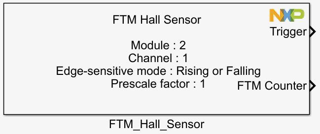
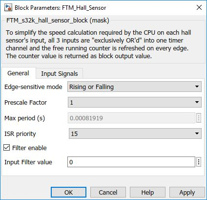
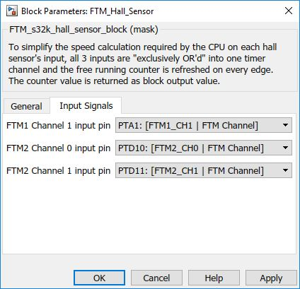

Hall Sensor Block
For 3 phase motor control sensor-ed applications the use of Hall sensors, generally 3 sensors placed 120 degrees apart around the rotor, are deployed to detect position and speed. Each of the 3 sensors provides a pulse that applied to an input capture pin, can then be analysed and both speed and position can be deduced. To simplify the calculations required by the CPU on each hall sensor's input, if all 3 inputs are "exclusively OR'd" into one timer channel and the free running counter is refreshed on every edge then this can simplify the speed calculation.
Block Image
Inputs:
- None
Outputs:
- Function-call
- Counter
Parameters and Dialog Box
The block dialog consists of the following tabs:
General
The General tab contains the following parameters:
Edge Selection
Get the motor speed on the event chosen
- Rising
- Falling
- Rising or Falling
Prescale factor for input clock
The selected prescale factor for input clock
- 1 – 2 – 4 – 8 – 16 – 32 – 64 – 128
ISR Priority
Interrupt priority level
- 0 – 15 - S32K14x
Filter Enable
When enabled will show value field
- Enable/Disable
Input Signals
The Inputs tab contains the following parameters:
Input pin for FTM module 1 channel 1
Defines which input pin for FTM module 1 channel 1. Pin list varies depending on the selected MCU in the main config block.
Input pin for FTM module 2 channel 0
Defines which input pin for FTM module 2 channel 0. Pin list varies depending on the selected MCU in the main config block.
Input pin for FTM module 2 channel 1
Defines which input pin for FTM module 2 channel 1. Pin list varies depending on the selected MCU in the main config block.
Block Dependency
- None
Block Miscellaneous Details
- None